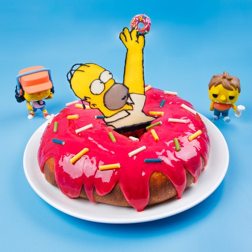

Rosquinha do Homer
INGREDIENTES:
600 ml de leite;
80 gramas de manteiga;
100 gramas de gemas;
10 gramas de reforçador;
30 gramas de leite em pó;
1 kg de farinha de trigo;
175 gramas de açúcar;
70 gramas de fermento biológico fresco.
COBERTURA:
300 gramas de chocolate;
250 gramas de açúcar impalpável;
Granulado Colorido.
MODO DE PREPARO:
Misture todos os ingredientes na batedeira.
Bata em velocidade 1 até ficar homogêneo.
Coloque a massa sobre a mesa e divida em 4 partes.
Deixe fermentar por 40 minutos.
Porcione e deixe redondo.
Corte o centro com um vazador pequeno.
Cubra e deixe crescer.
Derreta o chocolate e reserve.
Aqueça o óleo e frite por imersão.
COBERTURA:
Banhe no chocolate ou polvilhe açúcar impalpável.